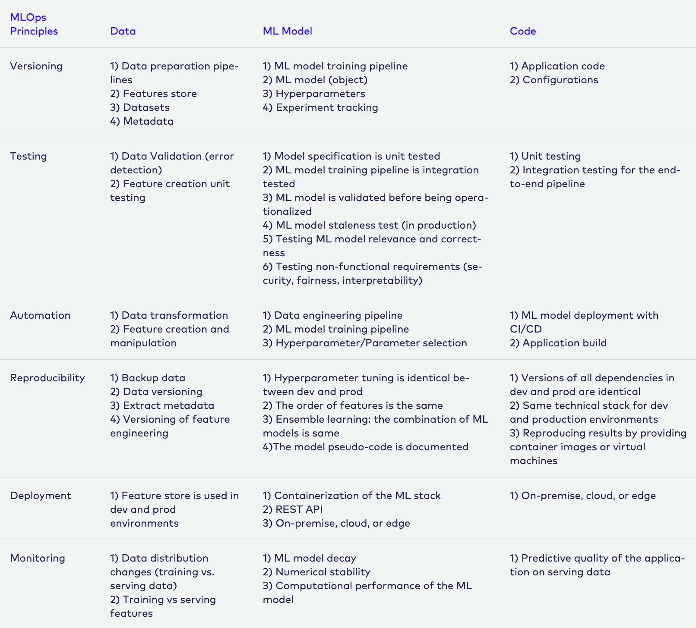

MLOps Best Practices
While best practices for MLOps is technically covered in the Prerequisites section, separate elaboration on these principles is required given their importance.
The principles (or best practices) concerning MLOps are:
- Automation
- Continuous X
- Versioning
- Experiment Tracking
- Testing
- Monitoring
Some core considerations for each principle as it relates to the the three levels where changes can take place (in your data, algorithm and code) include:
 Source: MLOps.org
Considerations for a Well-Architected Framework
While this does not contain a strict set of guidelines, the AWS Well-Architected Framework is a reliable resource for evaluating whether specific architecture aligns well with cloud best practices. The pillars of the framework (each with their own set of additional considerations) are:
- Operational excellence
- Security
- Reliability
- Performance efficiency
- Cost optimization
- Sustainability